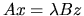

This section is concerned with the solution of the generalized eigenvalue problems , , and , where A and B are real symmetric or complex Hermitian and B is positive definite. Each of these problems can be reduced to a standard symmetric eigenvalue problem, using a Cholesky factorization of B as either B=LLT or B=UTU (LLH or UHU in the Hermitian case). In the case , if A and B are banded then this may also be exploited to get a faster algorithm.
With B = LLT, we have
Table 2.13 summarizes how each of the three types of problem may be reduced to standard form , and how the eigenvectors z of the original problem may be recovered from the eigenvectors y of the reduced problem. The table applies to real problems; for complex problems, transposed matrices must be replaced by conjugate-transposes.
| Type of | Factorization | Reduction | Recovery of | |
| problem | of B | eigenvectors | ||
| 1. | B = LLT | C = L-1 A L-T | z = L-T y | |
| B = UTU | C = U-T A U-1 | z = U-1 y | ||
| 2. | B = LLT | C = LT A L | z = L-T y | |
| B = UTU | C = U A UT | z = U-1 y | ||
| 3. | B = LLT | C = LT A L | z = L y | |
| B = UTU | C = U A UT | z = UT y |
Given A and a Cholesky factorization of B, the routines xyyGST overwrite A with the matrix C of the corresponding standard problem (see Table 2.14). This may then be solved using the routines described in subsection 2.4.4. No special routines are needed to recover the eigenvectors z of the generalized problem from the eigenvectors y of the standard problem, because these computations are simple applications of Level 2 or Level 3 BLAS.
If the problem is
and the matrices A and B are banded,
the matrix C as defined above is, in general, full.
We can reduce the problem to a banded standard problem by modifying the
definition of C thus:
A further refinement is possible when A and B are banded, which halves
the amount of work required to form C (see Wilkinson [104]).
Instead of the standard Cholesky factorization of B as UT U or L LT,
we use a ``split Cholesky'' factorization B = ST S
(SH S if B is complex), where: